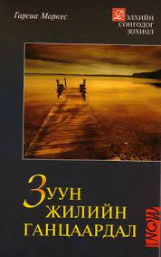

Заавал унших ном
Г.Г.Маркес – Зуун жилийн ганцаардал
Буэндигийнхний зургаан үеийн амьдрал ид шид, хувь тавилан, солиорол, улс төрийн үзэл баримтлал хийгээд зүүд, бодит амьдрал хоёрын аль нь болох нь мэдэгдэхээ болих санаанд оромгүй эргэлтүүд, хүний язгуур мөн чанарын илрэл зэрэг бичвэрийн сүлэлдээн уг зохиолын цөм болно. Уг бүтээл дэлхийн сонгодог уран зохиолын жагсаалтыг хэвлэгдсэн цагаасаа эхлэн түүчээлж, олон тайлал, таамаг дагуулсан сонгодог роман билээ. Хэрэв уншиж амжаагүй бол энэ ном таны заавал унших ёстой номын жагсаалтад бичигдэх учиртай юм.
Владимир Набоков – Лолита
Зохиолд дунд эргэм насны эр Гумберт аялж явахдаа нэгэн эмэгтэйн байшинд өрөө хөлслөн суудаг. Гумберт анхны хайраа золгүй байдлаар алдсанаас болж өсвөр насны залуу охидыг нууцхан хайрлах эмгэгтэй болсон байдаг. Ингээд эмэгтэйн гэрт толгой хорогдож түүний 12 настай бяцхан охин Лолитад сэтгэл алдарч нууцхан хүсэмжлэх болсноор зохиолын үйл явдал эхэлдэг. Зохиолч Владимир Набоковыг нэр алдарт хүргэсэн уг бүтээлийг уншихгүй өнгөрөөж болохгүй юм.
.jpg)
Л.Н.Толстой – Анна Каренина
Зохиолд гурван гэр бүлийн ээдрээтэй түүхийг харуулна. Орос оронд баримталж байсан үзэл бодол, нөхцөл байдлын хүлээсүүдийг хүний нийгмийн сайн, муу аль аль талаас нь хөндсөн учир гялалзсан амжилтыг авчирсан зохиол юм. Нөхөрт гарсан баян хатагтай Анна Каренинагийн жавхаалаг офицер Вронскийд өгсөн эмгэлэлт, нууц дурлалын түүхийг өөр нэгэн хос болох Константин Левин, Китти Щербацкая нарын аз жаргалтай, цэвэр ариун хайрын өнгөн дээр тод томруунаар ялган харуулна. Өнгөц харахад Аннагийн бүх зүйл бүтэмжтэй мэт, хэргэм язгуур өндөр эр нөхөр, хайрт хүү, эд хөрөнгө хийгээд ихэс дээдсийн хүрээлэлд өөрийн байр сууриа олсон гээд амьдралаас өөр юуг ч хүсэх вэ дээ гэмээр гял цал бууна. Гэвч сэтгэлийнх нь гүнд өчүүхэн гэмээр хоосон зай оршсоор ирсэн нь хайр сэтгэлийн аз жаргалд тэмүүлэх оргилуун хүслэн байлаа.
>